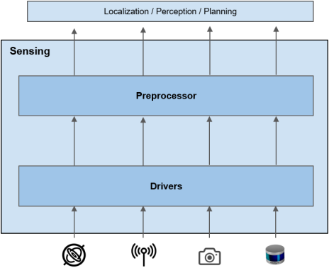
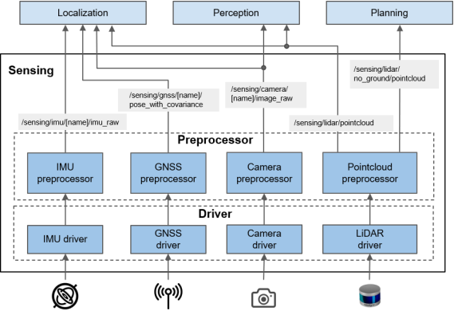

Sensing#
Overview#
For autonomous driving, a vehicle needs to be aware of its state and surrounding environment. Sensing stack collects the environment information through various sensors and manipulates data appropriately to be used by other stacks.

Role#
There are two main roles of Sensing stack:
- Abstraction of sensor data to ROS message
Sensing stack unifies the output format of same type of sensors so that following stacks (e.g. Perception) do not have to be aware of the hardware. - Preprocessing of sensor data
Raw data from sensors usually contains errors/noise due to hardware limitations. Sensing stack is responsible for removing such inaccuracies as much as possible before distributing sensor outputs to following stacks. Sensing stack may also do extra restructuring/formatting of data for so that there will be no duplicate data preprocessing done in different stacks.
Use Cases#
The use cases of Sensing stack are the followings:
- Estimating pose of the vehicle (Localization)
- Recognizing surrounding objects (Perception)
- Traffic light recognition (Perception)
- Recording log data
Requirements#
For the use cases 1-3mentioned above, the actual computation is done in either Localization stack and Perception stack, but the data used for computation must be provided by Sensing stack. Therefore, requirement of the Sensing stack is:
- Sensing stack should provide enough information for selected Localization method. e.g. LiDAR pointcloud, GNSS, and IMU (Use Case 1)
- Sensing stack should provide enough information for object recognition. e.g. LiDAR pointcloud and camera image (Use Case 2)
- Sensing stack should provide enough information for traffic light recognition. e.g. camera image (Use Case 3)
- Sensing stack should convert all sensor specific data into ROS message for logging. (Use Case 4)
- In order to abstract sensor specification from other stacks, Sensing stack should provide sensor data as ROS message specified described in Output section.
Since the architecture of Localization stack and Perception stack leaves choices of using different combinations of algorithms, Autoware does not set any requirements about input sensor configurations. It is the user's responsibility to come up with appropriate sensor configuration to achieve the user's use cases.
As a reference, the recommended sensors from past experience with Autoware.AI is listed below:
- LiDAR
- It should cover 360 FOV with minimal blind spots
- Camera
- It should cover 360 FOV with minimal blind spots.
- It should have high dynamic range.
- There should be at least one facing front for traffic light recognition.
- GNSS
- IMU
Note that recommended sensor configuration may change depending on future enhancement of Localization/Perception algorithms. More details about Autoware's reference platform will be discussed in here.
Input#
As mentioned above, the combination of sensor inputs can vary depending on user's sensor configurations. Therefore, incoming sensor data can also come in as different formats with various interface(USB, CAN bus, ethernet, etc.). Sensor drivers are usually made specific to the hardware, and Autoware only provides drivers for recommended sensor configuration mentioned above. Autoware does not limit the use of other sensors, but it is user's responsibility to prepare ROS sensor driver for the sensor in such case.
Output#
Since we don't set requirements about the sensor configuration of the vehicle, outputs of Sensing stack also varies. However, output message type must be defined for each type of sensors in order to abstract sensor outputs for other modules, which is one of the roles of Sensing stack.
The table below summarizes the output message for recommended sensors. More sensors will be added into above table after appropriate investigation about how the data will be used in the following stack. In general, the final output of Sensing stack should be in sensor_msgs type which is de facto standard in ROS systems. This allows developers to utilize default ROS tools such as RVIZ to visualize outputs. A reason should be provided if any other data type is used.
| Sensor | Topic (Data Type) | Explanation |
|---|---|---|
| LiDAR | /sensing/lidar/pointcloud ( sensor_msgs::PointCloud2) |
This contains 3D shape information of surrounding environment as a collection of rasterized points. It is usually used for map matching in Localization stack and object detection in Perception stack. |
| Camera | /sensing/{camera_name}/image ( sensor_msgs::Image) /sensing/{camera_name}/camera_info ( sensor_msgs::CameraInfo) |
Camera should provide both Image and CameraInfo topics. Image message contains 2D light intensity information (usually RGB). It is commonly used in Perception (Traffic Light Recognition, Object Recognition) and in Localization(Visual Odometry). By convention, image topic must be published in optical frame of the camera. CameraInfo message contains camera intrinsic parameters which is usually used to fuse pointcloud and image information in Perception stack. |
| GNSS | /sensing/gnss/gnss_pose( geometry_msgs::PoseWithCovariance) |
This contains absolute 3D pose on earth. The output should be converted into map frame to be used in Localization stack. |
| IMU | /sensing/imu/imu_data( sensor_msgs::Imu) |
This contains angular velocity and acceleration. The main use case is Twist estimation for Localization. The output data may also include estimated orientation as an option. |
rationale: GNSS data is published as geometry_msgs::PoseWithCovariance instead of sensor_msgs/NavSatFix. geometry_msgs are also one of de facto message type, and PoseWithCovariance message essentially contains the same information and is more convenient for Localization stack(the most likely user of the data) since localization is done in Cartesian coordinate.
Design#
In order to support the requirements, Sensing stack is decomposed as below. Depending on the use case and hardware configuration of the vehicle, users may choose to use a subset of the components stated in the diagram. General convention is that for each sensor, there will be a driver and optionally a preprocessor component. Drivers are responsible for converting sensor data into ROS message and modification of the data during conversion should be minimal. It is preprocessors' responsibility to manipulate sensor data for ease of use.

Drivers#
Driver components act as interface between the hardware and ROS software, and they are responsible for converting sensor data into ROS messages. In order to support Requirement 4, drivers should focus on converting raw data to ROS message with minimal modification as much as possible. Ideally, the output message type of driver should be the same as the final output of Sensing stack, but exceptions are allowed in order to avoid loss of information during conversion or to achieve faster computation time in preprocessor.
-
LiDAR driver
- Input: Raw data from LiDAR. Usually, it is list of range information with time stamp.
- Output:
sensor_msgs::PointCloud2that includes XYZ coordinates in sensor frame. If a single scan of LiDAR contains points with different timestamp, then accurate timestamp should be specified as an additional field for each point.
- Camera driver
- Input:
- Raw data from camera
- Calibration file of the camera that contains intrinsic camera parameter information
- Output:
- Image data in
sensor_msgs::Image. - Camera parameter information in
sensor_msgs::CameraInfo. Althoughsensor_msgs::CameraInfois not direct output from a camera, these information are published should be published with image since it contains essential information for image processing.
- Image data in
- Input:
- GNSS driver
- Input: Raw data from GNSS. Usually contains latitude and longitude information.
- Output: Output should be in
sensor_msgs::NavSatFixwhich contains calculated latitude and longitude information with addition of satellite fix information.
- IMU driver
- Input: Raw data from IMU.
- Output:
- measured linear acceleration and angular velocity values in
sensor_msgs::Imu. - (Optional) Orientation field in orientation in
sensor_msgs::Imu. This field should be filled only when orientation is direct output from the hardware (e.g. by using magnetometer). It is very common to estimate orientation from reported linear acceleration and angular velocity, but they must be done in preprocessor module rather than in a driver component.
rationale: Estimating orientation in driver makes recorded data ambiguous whether the orientation comes from hardware or from software.
- measured linear acceleration and angular velocity values in
Preprocessors#
Preprocessors are responsible for manipulating ROS message data to be more "useful" for following Autonomous Driving stacks. Actual implementation depends on how sensor data is used in other stacks. This may include:
- conversion of data format
- removing unnecessary information
- complementing necessary information
- removing noise
- improving accuracies
Since the output of preprocessors will the final output of Sensing stack, it must follow the output ROS message type stated above.
-
Pointcloud Preprocessor
- Possible preprocessing functions:
- Self cropping: Removal of detected points from ego vehicle.
- Distortion correction: Compensation of ego vehicle's movement during 1 scan
rationale: This may cause inaccuracy in reported shape/position relative to the sensor origin. - Outlier filter: Most LiDAR data contains random noise due to hardware constraints. Detected points from flying insects or rain drops are usually considered as noise.
- Concatenation: Combine points from multiple LiDAR outputs
- Ground filter: Removing grounds from pointcloud for easier object detection
- Multiplexer: Selecting pointclouds from LiDAR that is specific for certain use case
- Input: ROS message from the LiDAR driver. There may be multiple inputs if the vehicle has multiple LiDARs.
- Output: PointCloud preprocessor may output multiple topics in sensor_msgs::PointCloud2 depending on the use case. Some examples may be:
- Concatenated pointcloud: Pointcloud from all available LiDARs may have less blind spots
- Pointcloud without ground points: ground is usually out of interest when detecting obstacles, which helps perception.
- Possible preprocessing functions:
-
Camera Preprocessor
- Possible preprocessing functions:
- Rectification
- Resizing
- Input:
sensor_msgs::Imageimage data from driversensor_msgs::CameraInfofrom driver
- Output: The preprocessor may have multiple outputs depending on the selected hardware and selected algorithms in perception/localization. Some examples might be:
- rectified image: It is possible to rectify image using
sensor_msgs::CameraInfoso that cameras can be treated as a pinhole camera model, which is useful for projecting 3D information into 2D image( or vice versa). This enables fusion of sensor data in Perception stack to improve perception result. - resized image: Smaller images might be useful to fasten computation time.
sensor_msgs::CameraInfo: Camera preprocessor should relay camera information driver node without modifying any values since all parameters should be constant.
- rectified image: It is possible to rectify image using
- Possible preprocessing functions:
-
GNSS Preprocessor
- Possible preprocessing functions:
- conversion of (latitude, longitude, altitude) to (x,y,z) in map coordinate
- (Optional) Deriving orientation using multiple GNSS inputs
- (Optional) Filter out unreliable data
- Input:
sensor_msgs::NavSatFixmessage from driver. - Output: Pose in
geometry_msgs::PoseWithCovariance. Unreliable data can also be filtered out based on satellite fix information. Each fields in the message should be calculated as following:- Pose: This must be projected into map frame from latitude and longitude information
- Orientation: This should be derived from calculating changes in position over time or by using multiple GNSS sensors on vehicle.
- Covariance: Covariance should reflect reliability of GNSS output. It may be relaying covariance from the input or reflect satellite fix status.
- Possible preprocessing functions:
- IMU Preprocessor
- Possible preprocessing functions:
- Bias removal
- orientation estimation
- Input:
sensor_msgs::Imutopic from IMU drivers. - Output: preprocessed
sensor_msgs::Imueither relayed or modified from the input with functions stated above. Modification depends on hardware specification of IMU, and requirements from Localization algorithm.
- Possible preprocessing functions: